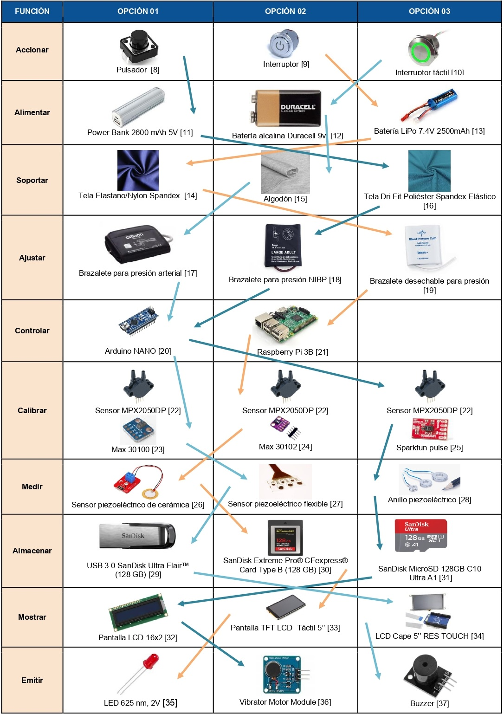
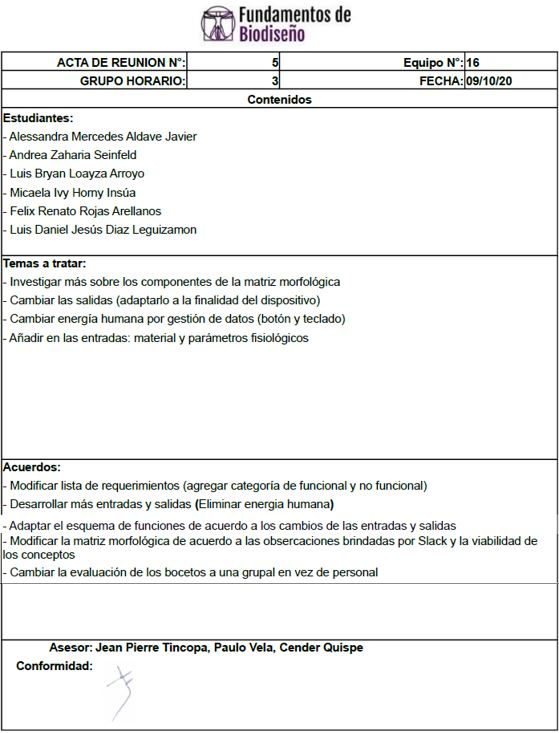

Tabla de requerimientos
Requerimientos

Identificacion de Entrada y Salida

-
Entradas
- Energía: Se refiere a la energía que el dispositivo requiere para funcionar.
- E. Eléctrica: para suministrar electricidad a los sensores y a la pantalla que proyectará los resultados de las variables correspondientes.
- E. Humana/ Mecánica: Para pulsar los botones de encendido de la pantalla
- Para activar el funcionamiento del conjunto de sensores.
- Señales: Señales visuales de encendido (activación y control iniciado por el usuario).
- Energía:
- Calor producido por el calentamiento de la fuente de energía que alimenta el circuito.
- Ruido de la señal de alarma ante la alteración de los parámetros a medir.
- Señales: Señales visuales de apagado y de estado o inactividad, y señales de indicadores de las distintas variables que se van a medir.
Salidas
Esquema De Funciones
Matriz Morfológica

Evaluación de Conceptos de Solución


Bocetos del Kit de Monitoreo Prenatal
Los 3 bocetos consisten de manera general en un kit para los controles prenatales. Estos se basan en una faja con distintos sensores que sirven como medidores de parámetros importantes para los controles prenatales como la presión arterial, el pulso, la oxigenación y los movimientos fetales. Además, ayuda a minimizar los posibles dolores lumbares que puedan surgir durante el embarazo, ya que, si bien cada uno de los bocetos de solución consta de una forma y ergonomía diferente, las 3 tienen como objetivo ser un soporte para el peso del vientre. Todas las ideas están acompañadas de un baumanómetro externo.
Boceto 1

Los sensores piezoeléctricos se encuentran dentro del material textil en la parte inferior del abdomen y sus cables están conectados al controlador. También hay un sensor oxímetro y un pulsómetro que se encuentran dentro de la tela del lado izquierdo, pero con el punto de contacto expuesto al exterior. Al lado izquierdo hay un estuche dentro de un bolsillo donde con una caja impresa en 3D en la que se protege la placa controladora y la pantalla. Además, hay un interruptor táctil para encender los componentes electrónicos, un emisor de sonido y una tarjeta de memoria se encuentran conectados al controlador.
Boceto 2
Posee un sensor oxímetro y pulsómetro que se ubican en la parte superior del pecho dentro de la tela con el punto de contacto expuesto al exterior; mientras que los sensores piezoeléctricos están distribuidos en la cinta inferior de la faja. Además, en el lado superior izquierdo se encuentra el vibrador, mientras que en el inferior hay un bolsillo que contiene un estuche con el controlador en la parte de abajo y la pantalla LCD 16x2 en la parte de arriba. En el mismo estuche habrá ranuras para la tarjeta de almacenamiento masivo y el interruptor encendido On/Off LED iluminado.

Boceto 3

El oxímetro y el sensor de pulso estarán conectados a una placa Arduino, la cual se ubicará en una pequeña caja impresa mediante tecnología 3D con su batería respectiva. Por último, contará con un pequeño buzzer (parlante), un micro SD para el almacenamiento de datos, un interruptor táctil para encender/apagar el dispositivo y la pantalla TFT LCD táctil de 5”.
Baumanómetro
El baumanómetro digital construido usando un Arduino UNO, es un prototipo en el que la data recogida por el sensor de presión es analizada a través de un código en Python utilizando un método de pendientes. La información que el baumanómetro devuelva al usuario, podrá ser almacenada en la misma memoria USB. Su finalidad radica en el monitoreo de la presión arterial y el desarrollo de preeclampsia.

Referencias
[1]C. Coasaca Apaza, Diseño de un sistema automático para el llenado de pilas en bandejas de cartón. Pontificia Universidad Católica del Perú, Facultad de Ciencias e Ingeniería. Mención: Ingeniería Mecánica, 2013.
[2] F. Castillo Salinas et al., “Recomendaciones para la asistencia respiratoria en el recién nacido (IV). Ventilación de alta frecuencia, ex-utero intrapartum treatment (EXIT), oxigenador de membrana extracorpórea (ECMO),” An. Pediatría, 2017, doi: 10.1016/j.anpedi.2017.04.003.
[3]"Baumanometer with Python and Arduino UNO (ESP/ENG)", Arduino Project Hub, 2019. [Online]. Available: https://create.arduino.cc/projecthub/165265/baumanometer-with-python-and-arduino-uno-esp-eng-97f77e. [Accessed: 06- Oct- 2020].
[4] A. Chandrasekhar, C. S. Kim, M. Naji, K. Natarajan, J. O. Hahn, and R. Mukkamala, “Smartphone-based blood pressure monitoring via the oscillometric finger-pressing method,” Sci. Transl. Med., 2018, doi: 10.1126/scitranslmed.aap8674.
[5] C. Sequeira, L. Sánchez, L. Sandoval, S. Murillo and M. Sánchez, "Lumbalgia en el embarazo: abordaje para el médico general", Revista Clínica de la Escuela de Medicina de la Universidad de Costa Rica, 2019.
[6] C. Coasaca Apaza, Diseño de un sistema automático para el llenado de pilas en bandejas de cartón. Pontificia Universidad Católica del Perú, Facultad de Ciencias e Ingeniería. Mención: Ingeniería Mecánica, 2013.
[7] O. Sovero, "Diseño de sistema amortiguador para controlar desgaste del cable de acero en sistema de carguío de mineral de S.M.C.S.A. –Yauricocha", Bachiller, Universidad Nacional del Centro del Perú, 2017.
[8] Electromanía,Botón Pulsador 12x12x6mm. 2020.
[9] Arcade Xpress, Interruptor de Encendido On/Off LED iluminado de 22mm de diámetro, modelo KA22. 2020.
[10] RS delivery, Interruptor táctil RS Pro, Enclavamiento, Led Verde, IP68. 2020.
[11] Power Bank 2600 mAh 5V Arduino, Electronics and Robotics Electan, OnLine Store.” https://www.electan.com/power-bank-2600-mah-p-6508-en.html (accessed Oct. 16, 2020).
[12] Pila alcalina DURACELL 9V - Ticaplus.” https://www.ticaplus.com/pilas/1528-pila alcalina-duracell-9v.html (accessed Oct. 11, 2020).
[13] Batería LiPo 7.4V 2500mAh “Storm 7.4V 250mAh 50C LiPo Battery Pack (JST) - HeliPal.” http://www.helipal.com/storm-7-4v-250mah-50c-lipo-battery-pack.html (accessed Oct. 16, 2020).
[14] Made in China,Nylon Spandex Lycra Knitted Fabric for Sportswear/Bikini/SwimWear. 2020.
[15] Punto algodón ORGANICO por metro | algodón ECO barato. https://ilovetelas.com/telas-eco/25-punto-algodon-organico.html (accessed Oct. 07, 2020).
[16] Alibaba,Dri Fit ojal textura 91% poliéster 9% Spandex elástico neto sándwich de malla de agujero de tela FDY. 2020.
[17] Hiraoka, Brazalete pequeño para tensiómetros OMRON. 2020.
[18] Shopify, Brazalete para presión NIBP. 2020.
[19] Berk Tree, Soft Cloth double tube bp cuff with no connector - disp, 2 tb, thigh, box of 5 - model mds 9715. 2020.
[20]“Arduino Nano 3.0 – Embtronik.” https://www.embtronik.com/producto/arduino-nano-3- 0/ (accessed Oct. 16, 2020).
[21] Amazon, Raspberry Pi 3 Model B - Tabla. 2020.
[22] Electrónicos Caldas, Sensor integrado de presión de aire, de alta precisión, rango 0 a 50 kPa (0 a 7.25 psi), medida diferencial, dos puertos, salida lineal, calibrado y compensado en temperatura, span total de la salida: 40 mV. 2020.
[23] Polaridad, MAX 30100 sensor de latido de corazón y oxímetro de pulso con comunicaciones I2C para wearables de salud. 2020.
[24] De Sensores, Sensor de frecuencia cardiaca MAX 30102 para Arduino. 2019.
[25] Sparkfun, SparkFun Pulse Oximeter and Heart Rate Sensor - MAX30101 & MAX32664 (Qwiic), 2020.
[26] Electromanía, Módulo Sensor de vibración piezoeléctrico de cerámica para Arduino. 2020.
[27] Piezo Tech,Thin and Flexible Piezoelectric Sensors. 2020.
[28] HBM, Anillo piezoeléctrico de medida de fuerzas PACEline CLP subminiatura, cargas nominales entre 3 kN y 80 kN. 2020.
[29] Ripley, SANDISK PENDRIVE USB ULTRA FLAIR 128GB. 2020.
[30] Western Digital Online, SanDisk Extreme Pro® CFexpress® Card Type B. 2020.
[31] Memory Kings, SanDisk MicroSD 128GB C10 Ultra A1. 2020.
[32] Amazon,B Blesiya Módulo de Pantalla LCD 16x2 Caracteres para Arduino Equipo de Instalación Electrónica. 2020.
[33] Máx electrónica,Pantalla LCD Táctil 5 Pulgadas 800x480 HDMI para Raspberry Pi. 2020.
[34] Digi-Key Electronics, Pantalla táctil LCD de 5" Pantalla BeagleBone Black Placa de expansión para evaluación de plataforma. 2020.
[35] “TLHR5400 Vishay | LED Vishay, Montaje en orificio pasante, Rojo, 625 nm, 10 mcd, 2 V, |RS Components.” https://cl.rsdelivers.com/product/vishay/tlhr5400/led-vishay montaje-en-orificio-pasante-rojo-625/1777635 (accessed Oct. 16, 2020).
[36] “Amazon.com: Módulo de motor de vibración mini motor de vibración DC plano para Arduino: Industrial & Scientific.” https://www.amazon.com/Vibration-Motor-Module
[37] https://robu.in/product/pcb-mounted-passive-buzzer-module/ (accessed Oct. 14, 2020).
Acta número 5
